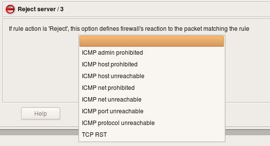

http://www.fwbuilder.org
| Author: vadim@fwbuilder.org http://www.fwbuilder.org |
This article continues the series of articles on Firewall Builder, a graphical firewall configuration and management tool that supports many Open Source firewall platforms as well as Cisco IOS access lists and Cisco ASA (PIX). Firewall Builder was introduced on this site earlier with articles Getting Started With Firewall Builder, Using Built-In Revision Control In Firewall Builder, Using Built-in Policy Installer in Firewall Builder, Using Firewall Object In Firewall Builder.
This article explains key principles of the policy (access control) rule sets in Firewall Builder. I plan to demonstrate examples of policy rules and how they translate into iptables, pf and Cisco IOS and PIX configurations in one of the next article of the series.
More information on Firewall Builder, pre-built binary packages and source code, documentation can be found on the project web site at http://www.fwbuilder.org/. Numerous examples of iptables, pf and other rules are available in Firewall Builder Users Guide. Follow Firewall Builder Project Blog for announcements and articles on all aspects of using Firewall Builder.
One of the fundamental principles on which Firewall Builder is based is that it does not aim at just supporting one particular firewall platform. Since the goal is to be able to generate configuration for many different firewalls from the same representation in the GUI, Firewall Builder works with an abstract high level model of a firewall which incorporates features found in all target firewalls. In other words, Firewall Builder is not another iptables GUI, or PF GUI, or PIX GUI. Firewall Builder works with a firewall that is neither one of these, and yet at the same time it is all of them combined. It has useful features found in all of the target platforms. If a feature that it implements is not supported in some target firewall, it tries to emulate it (if possible) to make it look like that target does support it.
Target firewalls sometimes differ in the very fundamental principles of operation. This can make managing policies in the multi-vendor environment challenging. For example, most of the platforms supported by fwbuilder process rules top-down, with the first matching rule making decision and stopping processing. However PF by default does it in the opposite way, with each matching rule not stopping processing and the last one making final decision. There is no "right" way of doing this, but if an administrator is used to some method, it is hard to switch back and forth while managing different firewalls. Another example of similar discrepancy is the order in which access control and nat rules work on a packet. Most firewalls supported by fwbuilder do nat first, so that access control rules "see" translated addresses in the packet. PIX, on the other hand, does it in the opposite order, with access control rules working on the packet before nat.
Since Firewall Builder works with an abstract firewall, all these discrepancies go away and administrator always sees consistent model regardless of the choosen target firewall platform. For PIX, the program can make it look like NAT is done after access control rules (but this is optional). For PF, the program always uses PF option that switches it to the non-default "first match" behavior. In the end, the program takes care of translating the firewall model it presents to the user into configuration of the actual target firewall.
That said, policy rules described in this article will look very familiar to anyone who ever worked with Firewall-1, PIX, iptables, PF and so on. These rules are just generalization of the ideas and features found in all of those firewalls. The GUI helps administrator create and manage rule sets and policy compilers then translate them into configuration language of the chosen target firewall platform.
The main Firewall access policy consists of a set of rules. Packets are analysed by comparing their parameters with rules in the policy, one after the other, from top to bottom. The first rule that matches the packet has it's Action applied to the packet.
Each rule includes a standard set of parameters, or Rule Elements, that are used for comparison with the packet. Rule elements include "Source", "Destination", "Service", "Interface", "Direction", and "Time". For example, if a packet entering the firewall has a source address that matches the object in the Source field of the rule, its destination address matches the object in Destination, its protocol and port numbers match the object in Service, the interface it passes through matches the Interface field, its direction matches that specified in Direction, and it's time matches Time, then the firewall will take action, specified in the Action field of the matching rule. Of course, a field with "Any" or "All" in it will match all packets for that field.
For example, in
Access Policy rules represent access control because they define which packets will be permitted and which will be denied. Access Policy rules operate on the packet's source and destination addresses and protocol parameters. These rules work regardless of the interface and direction of the packet, unless a particular interface or direction, or set of interfaces, is assigned to the rule.
The Source and Destination fields allow you to match a packet to a rule based on source and destination IP address.
Either field may be set to "any", which means that the packet will match on that field regardless. Or, you can set a field to a particular IPv4 address (Address object), IPv6 address (Address IPv6 object), the IP address or addresses associated with all interfaces of a host (Host object), a range of IP addresses (Address Range object), all the addresses in a particular subnet (Network object), an address configured as DNS "A" record for a given host name (DNS Name object), or a group of any of the above. You can place more than one object in either field, too. These object types have been covered in the articles published on this site here, here, here, here, here and here. You can find detailed description of all object types and their usage in policy and NAT rules in the Firewall Builder Users Guide which you can download from our web site at http://www.fwbuilder.org. We have both PDF and HTML versions.
In addition, you can "negate" an object by dragging it to a field, then selecting Negate from the right-click menu. In the following screenshot, the RFC 1918 address range object has been negated, so the rule matches any destination address that is not part of private address space.
Destination matches any IP that is not an RFC 1918 addressThe Service field is also used to match packets to rules. Use Service Objects to specify what services should be matched. The service object types have been discussed in the series of articles on this site: IP Service, TCP or UDP Service, ICMP or ICMP6 Service and Custom Service.
As in the Source and Destination fields, you can "negate" an object by dragging it to a field, then selecting Negate from the right-click menu.
By default, all rules created in Firewall Builder affect all firewall interfaces, regardless of the target platform. However, sometimes you want to assign a rule only to a particular interface or set of interfaces. To populate this field, drag an interface object from the firewall object the rule set belongs to.
If you also want to assign a "direction" to the rule, use the next field.
This field applies to firewall interfaces only, not host interfaces.
The "direction" for a rule is defined with respect to the firewall
machine, not to the network behind it. For example, packets that
leave the internal network through the firewall are considered
"inbound" on firewall's internal interface and "outbound" on its
external interface. Likewise, packets that come from the Internet
are "inbound" on the firewall's external interface and "outbound"
on its internal interface.
The Action is the action taken on a rule that matches on the Source, Destination, Service, Interface, Direction, and Time fields.
The policy rule action can be one of the options listed below. Not all firewalls support all options, but the GUI will only allow options that are valid for the indicated firewall target. In addition, the same action may have a different name on different platforms.
Some actions can have parameters. To set a parameter for an action, first select the action, then double-click on the icon. (You can also right-click and select parameters.) The parameters dialog appears:
Accept:
Allows the packet through the firewall. No subsequent rules are applied. This action has no parameters.
Deny:
Silently drops the packet. No subsequent rules are applied. This action has no parameters.
Reject:
Packet is dropped and an appropriate message is sent back to the sender. No subsequent rules are applied. This action has a parameter that lets you specify how the firewall reacts to the packet. Parameter options include TCP RST and a number of ICMP messages.
Accounting/Count:
Counts packets that match the rule, but makes no decision on the packet. Even if the packet matches, the inspection process continues with other rules below it. This action has a parameter for specifying the rule name for accounting.
Queue/Pipe:
Passes the packet to a user space process for inspection. It is translated into QUEUE for iptables and "divert" for ipfw. This action is only supported by compilers for iptables and ipfw. This action has no parameters.
Tag/Mark:
Associates a tag with the packet. The tag can later be inspected using service object TagService. This action is translated into MARK target with corresponding --set-mark parameter and optionally additional an rule with a CONNMARK --save-mark target for iptables. If the option that activates CONNMARK target is used, the compiler also adds a rule at the very top of the policy to restore the mark. Rules are placed in INPUT,OUTPUT and FORWARD chain of the "mangle" table, which ensures that DNAT happens before rules in the mangle table see the packet. The PREROUTING chain in the mangle table is executed before the PREROUTING chain in the NAT table, so placing tagging rules in the PREROUTING chain would make them fire before DNAT. The POSTROUTING chain of the mangle table, as well as its FORWARD and OUTPUT chains, work before corresponding chains of the NAT table. In all cases the goal is to make sure DNAT rules process the packet before, and SNAT rules process it after, filtering and tagging rules.
For PF this action is translated into tag. Supported only by compilers for iptables and PF. This action's parameter lets you specify which TagService service object to apply to the matching packet.
Classify:
Allows the firewall to define a QoS class for the packet that matches the rule. It is translated into CLASSIFY for iptables, with parameter --set-class. For PF it is translated into "queue". The compiler for ipfw can use "pipe", "queue" or "divert" depending on how the action is configured in the GUI. This action is only supported by compilers for iptables, PF and ipfw. This action has a parameter that lets you specify a Classify string.
Custom:
Allows you to specify an arbitrary piece of code to be used in place of an action. Supported by compilers for iptables, ipf and ipfw. A parameter lets you specify the string.
Branch/Chain/Anchor:
Used to branch to a different rule set. It works on target platforms that provide suitable syntax and allow control to return to the higher level rule set if the branch cannot make a final decision about the packet. For iptables this action is translated into a user-defined chain. The name of the chain is the name of the branch chosen by the administrator. For PF this action is translated into an anchor with the same name as the branch rule set. This action is only supported by compilers for iptables and PF. A parameter lets you specify which other rule set to branch into.
Routing:
Makes the firewall route matching packets through a specified interface or a gateway. This action is translated into ROUTE target for iptables and route option for PF and ipfilter. Compilers for PF and ipfilter support "fastroute", "route-to", "reply-to" and "dup-to" options. Parameters let you change the inbound and outbound interface and route the packet through a specified gateway. You can also tell the firewall to continue inspecting the packet after a match, and you can tell the firewall to make these changes to a copy of the packet while allowing the original packet to proceed normally.
Continue:
Essentially an empty action. Can be used when you want to assign an option, such as logging, to a match but take no other action in that rule. This action has no parameters.
The Time field allows you to restrict a match to a particular time interval. Currently only iptables target firewall platform supports time restrictions as part of the policy rules.
The Options field allows you to specify certain options with regard to packets that match the rule. Almost all platforms have options related to logging, and some platforms have more extensive options. Click Help in the Options dialog for platform-specific help.
If the options of a particular rule have been changed from their default, an icon appears in the Option field for that rule. Keep in mind that not all rules have the same default options. For example, by default a Deny rule is stateless, because there is no reason to keep state on a connection that won't be allowed and there will be no reply or other packets to match the state. So, if you turn on state for a Deny rule, you'll see the icon.
An Accept rule has the opposite behaviour. By default, state is kept for Accept rules, so no icon appears when state is on. If you turn state keeping off, in other words, if you change the behaviour for that rule to make it different from the default, then the icon is displayed.
Every Firewall object created in Firewall Builder has a single Policy rule set to start. For many firewalls, this is all you need. However, with Firewall Builder, you can create multiple access policy rule sets, and, if you platform supports it, branch between them. This can help you modularize your policy.
Here we have Firewall object "fw" with three policy rule sets, Policy, Policy_2 and mgmt:
To create an additional rule set, right-click on the Firewall object in the tree and select Add Policy Rule Set.
All Policy rule sets have configurable parameters. To see a Policy rule set's parameters, double-click on it in the tree to open it in the editor.
This dialog has a Name, IPv4/IPv6 setting and a Top ruleset checkbox. For iptables firewalls, there is also a pair of radio buttons that indicates whether the policy should affect filter+mangle tables or just mangle table.
The IPv4/IPv6 pull-down menu lets you select whether the rule set should be compiled for IPv4 only (ignoring any IPv6-related rules), IPv6 only (ignoring any IPv4-related rules), or for both IPv4 and IPv6. If both IPv4 and IPv6 are selected, the compiler "does the right thing" and puts each rule into the correct part of the configuration.
Only one rule set can be tagged as the "top" rule set. The "top" rule set is the primary rule set that is assigned to the device. Only one rule set of each type, can be marked as "top". The "top" rule set is always used (if it has any rules). Other rule sets are only used if they are the targets of branching. (In Firewall Builder 3.X, only the Policy rule set can branch.)
iptables: rules defined in the "top" rule set will go into built-in chains INPUT,OUTPUT,FORWARD. Rules defined in rule sets where this checkbox is not checked go into a user-defined chain with the same name as the rule set.
PF: rules defined in the rule set with top rule set checkbox turned off go into an anchor with the name of the rule set.
Cisco IOS access lists: if the top rule set checkbox is turned off, the rules go into access list with the name prefixed with the name of the rule set; this access list will not be assigned to interfaces via "ip access-group" command. Rulesets with checkbox top rule set checked generate ACLs with names consisting of the shortened name of interface and direction abbreviation ("in" or "out"). Only these lists are assigned to interfaces.
You can fork processing between rule sets with the "Branch/Chain/Anchor" (depending on platform) Action in a rule. In the next screenshot, the rule causes packets headed for the "fw-mgmt" host to be passed to the "mgmt" rule set.
A packet directed to the "mgmt" rule set leaves the main rule set and begins matching against rules in the "mgmt" rule set. If it matches in the "mgmt" rule set, then that action is taken. If it does not match in the "mgmt" rule set, then processing is passed back to the calling rule set.
References: